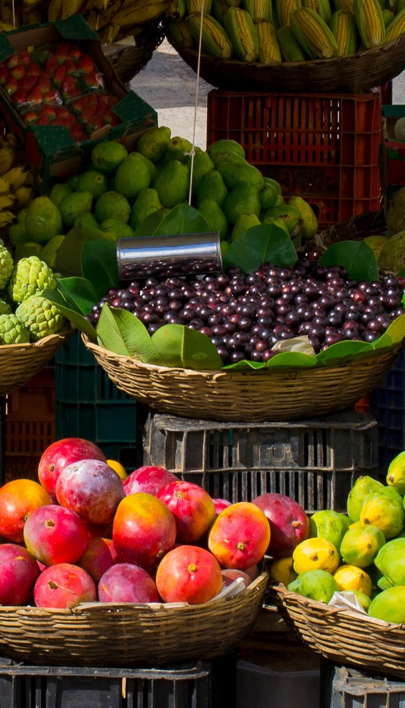

- GrowMoongarden Witch GardenConcoctIngredients Uses
Ingredient Uses
Magical Properties of Fruits, Nuts, and Vegetables
Almond - Prosperity and Wisdom
Apple - Immortality, Love, Friendship
Apricot - Love
Asparagus - Sex
Avocado - Love and Beauty
Banana Fertility and Prosperity
Beet - Love
Black Walnut - Divinity
Blackberry - Wealth, Healing, Protection
Blueberry - Protection
Cabbage - Money Luck
Carrot -Lust
Cashew - Money Luck
Celery - Psychic Powers
Cherry - Love and Happiness
Chili Pepper - Love and Fidelity
Coconut - Purification
Corn - Protection
Garlic - Protection and Purification
Ginger -Adventure and Sensuality
Leek - Strengthen Relationships
Onion - Endurance, Protection, Stability
Orange - Beauty
Sunflower - Energy
Walnut - Divinity
“The first condition of success in magick is purity of purpose.” ― Aleister Crowley